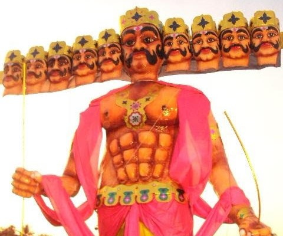

Top 5 Festivals Of India
1. Diwali
Diwali is one of the most significant religious festivals of India among the Hindu, Sikh, and Jain communities. Diwali is celebrated in the month of Kartik according to the Hindu calendar ( October or November) Diwali is the festival of lights, each year on Diwali Indians light up their houses to welcome Goddess Laxmi (Goddess of Wealth). One of the main rituals on Diwali is worshiping Goddess Laxmi. Every year right before Diwali the people of the Hindu community clean their houses, get them painted, and do all the required renovations. On the day of Diwali people nicely decorate their houses with Diyas and candles. Mesmerizing colorful Rangolis are also made at the door to welcome the Goddess Laxmi. People wear new fancy clothing and give each other gifts. Diwali is an important festival in India also because on the day of Diwali Lord Rama came back with his wife Sita and brother Lakshman to his kingdom Ayodhya after 14 years of exile. Lord Rama came back home after a long battle where he defeated and killed the demon king Ravana. On the day of Diwali people also enjoy fireworks to celebrate. Some of the finest Indian dishes and sweet dishes are prepared for this festival. People also visit their family and friends to wish them and exchange gifts and sweets.

2. Navratri and Durga Puja
Durga Pooja is one of the major festivals of India especially in the north and eastern parts of India. In the Northern part of India, this none day festival is celebrated as Navratri. In the state of West Bengal, this festival is celebrated as Druga Pooja. This is a nine-day festival followed by the tenth and final day celebrated as Vijay Dashmi. This festival is a nine-day celebration of Goddess Durga. It is a celebration of the victory of Goddess Durga over the Demon Mahishasur who wanted to start a war against the Gods. During the nine-day celebration, nine forms of Goddess Durga are worshipped. Navratri or Durga Pooja is one of the most religious festivals in India. In northern India, fasting is observed for seven to eight days during the Navratri, and fasting concluded on the eighth or ninth day. Whereas, in West Bengal, the celebrations are conducted on the grand level in Pandals (huge tents) where each night for nine consecutive nights people gather to sing, dance, and enjoy delicious sweets and savouries. In The state of Gujarat Navratri is celebrated in its unique way. People gather in huge numbers wearing traditional Gujarati clothing for nine successive nights to perform the traditional Garbha dance on devotional songs of Goddess Durga. People are highly enthusiastic about this celebration and these can sometimes go on throughout the night.

3. Dussehra
The festival of Dussehra is one of the most famous festivals of Indian states. This festival is celebrated across India among the Hindu community. Dussehra is a celebration of the victory of Lord Rama over the Deamon king Ravana. It is also interpreted as the victory of good against evil. Dussehra is one of the most popular festivals in India and each state has a unique way of celebrating this festival. In northern parts of India, Ram Leela is conducted for nine consecutive days before this grand festival. Ram Leela is a theatre enactment of the mythological story associated with this festival is enacted by local artists. Ram Leela is conducted on both big and small levels in various communities where people come to watch this nine-day theatrical representation. On the last day, people gather on huge grounds and massive idols of Demon Ravana, his brother Kumbhakaran and son Meghnad are set on fire followed by fireworks. While people gather to watch the Ravana burn there are also arrangements of street food and other fun activities here. People come to witness this ceremony and enjoy it here with their families. Among all the festivals in India Dussehra is the most popular and widely celebrated. In South Indian states Dussehra is celebrated with massive parades with ornamented elephants and guards riding horses, escorting the idol of Goddess Durga all over the city. In the state of Himachal Pradesh, Dussehra is celebrated distinctively. The city of Kullu is famous for its Dussehra celebration throughout the country. In Kullu Dussehra is celebrated by organizing a seven-day long carnival where a massive statue of Lord Raghunath is carried on a beautifully decorated chariot and carried through the city. LargeLarge numbers of people gather from all cities of Himachal for this week-longweek-long celebration.
4. Holi
Holi is one of the best popular festivals of India. At this lovely festival family and friends gather mostly wearing white cloths to sing, dance and play with colours. Holi is played by throwing dry and wet colours on each other. On Holi special sweet known as Gujiya is prepared and enjoyed by everyone. Other special foods and drinks include Thandai, Pakora, and Dahi Bhalla. This famous festival of India also has a mythological link with it. This is the legendry story of Hiranyakshyap and his son Prahlad. Hiranyakshyap was an evil king who wanted the gods to worship him but his son Prahlad became a devotee of Lord Vishnu. So Hiranyakshyap tried to kill his son with the help of his sister Holika. Holika had a boon of surviving in the fire, Hiranyakshyap asked her to enter the fire with Prahlad in her lap. However, this plan did not succeed as Lord Vishnu saved Prahlad. Instead, Holika was killed by the fire and Hiranyakshyap was killed by Lord Vishnu’s Narasimha Avatar. Holi is considered to be one of the major festivals of India. Each year one day before the festival of Holi the ceremony of “Holika Dahan” is conducted by lighting bonfire. It is considered by Hindus as if they are burning Holika or the evil for good to survive.
5. krishna Janmashtami
Krishna Janmashtami is a celebration of the birth of one of the most loved Hindu deity Lord Krishna. This is one of the most popular festivals in India. Lord Krishna’s birthday is celebrated in high spirits all over the country. All Krishna temples throughout the country are nicely decorated and special cultural events are organized. As per the scriptures, Lord Krishna grew up in Mathura – Vrindavan which is considered to be the best places of Indian cultural heritage. The birth of Lord Krishna is celebrated as a grand affair in Shri Banke Bihari Temple in Vrindavan. The devotees fast all day till midnight as it is believed Lord Krishna was born at midnight. At midnight the grand celebration begins wherein, the idol of Lord Krishna is bathed with milk and honey and dressed in new clothes after which the ceremony of Maha Abhishek is carried out. This is followed by cultural songs and classical dances at the temple. This auspicious celebration goes on for the entire night. It is a tradition to offer 56 dishes to Lord Krishna on his birthday. This is also known as “Chappan Bhog” meaning 56 offerings. 56 different varieties of sweet and savory dishes are prepared by the devotees as offerings to Lord Krishna.